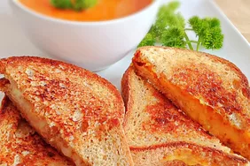

Grilled Cheese Sandwich

Description
Everyone needs to know how to make a classic grilled cheese sandwich. Whether you're a beginner cook or an old pro, you'll come back to this top-rated grilled cheese recipe again and again..
Ingredients
- 4 slices white bread
- 3 tablespoons butter, divided
- 2 slices Cheddar cheese
Steps
- Preheat a nonstick skillet over medium heat. Generously butter one side of a slice of bread. Place bread butter-side down in the hot skillet; add 1 slice of cheese. Butter a second slice of bread on one side and place butter-side up on top of cheese.
- Cook until lightly browned on one side; flip over and continue cooking until cheese is melted. Repeat with remaining 2 slices of bread, butter, and slice of cheese.